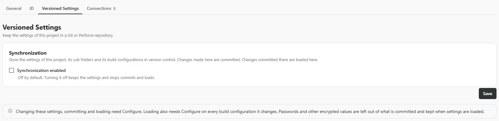

Versioned settings
Keep a project's settings in your repository next to the code, with a history of every change.
With versioned settings on, Buildspawn writes the settings of a project and of everything inside it to a folder in a Git or Perforce repository. Every change you make in the browser becomes a commit. A change pushed to the repository is loaded back into Buildspawn. You can see who changed what, and roll back with your normal tools.
When to use it
Use it when you want to review settings changes as commits or pull requests, undo a bad change, or keep the settings of many build configurations next to the game code.
Turn on versioned settings
- Open the project and go to its settings. Choose Versioned Settings.
- Under Synchronization, tick Synchronization enabled. More settings appear.
- Under Settings storage, choose the version control (Git, or Perforce when it is offered) and fill in the repository URL or Perforce root, the branch, and the folder in the repository (empty means the top). Give a credential ID if the repository needs one.
- Under Behaviour, choose:
- Allow editing via UI: on, or off to make the repository the only place to change settings;
- When a build starts: use the current settings, or the settings from the repository;
- the check interval: how often Buildspawn looks for new commits (30 seconds or more).
- Click Save, then Commit current project settings to write the first commit.

The status card shows the state: In sync with VCS, or Synchronization stopped with the error. It also shows the last commit and the last load, with the revision, user and time.
The Git storage runs the git command on the Buildspawn server, so git must be installed there. Each command has a 120-second limit.
A project inside a project with versioned settings is covered by it. A project with its own versioned settings is stored on its own.
What goes into the repository
settings-format.txt the format: buildspawn-xml 1
config.xml the project's own settings
jobs/Windows Build/config.xml each build configuration, project or template inside
jobs/Tools/jobs/Asset Pipeline/config.xml- Builds, workspaces and build numbers are never committed.
- Secrets stay on the server. Passwords and other encrypted values are emptied in the files and filled back in from the server when settings are loaded. A secret set only in the repository cannot be loaded: set it in the browser.
- The versioned-settings setup itself is not committed, so a commit cannot switch it off.
Edit settings in the repository
- Clone the repository and change a
config.xml, for example to add a step. - Commit and push.
- Within the check interval, Buildspawn sees the new commit and loads it. Each file is checked before anything changes; a broken file stops the load and the status names it.
You can also load at once: click Load project settings from VCS. A dialog warns you that changes not yet committed are lost.
Changes in the browser
Every save in the browser is committed for you. Saves within 5 seconds become one commit, with the message Change settings of <items> (by <user>) and the user as author.
Conflicts
Buildspawn does not merge. If someone pushed while you edited in the browser, the automatic commit stops and the status asks you to choose:
- Commit current project settings: the settings in Buildspawn win.
- Load project settings from VCS: the repository wins.
Permissions
- Anyone who can read the project can see the page.
- Saving, committing and loading need the right to configure the project. Loading also needs the right to configure every item it changes; otherwise nothing is loaded.
A worked example
The Skyforge Game project stores its settings in the Git repository git.studio.example/skyforge/ci-settings.git, branch main, folder buildspawn. Allow editing via UI is on. A programmer adds a step in the browser. A minute later the repository has the commit Change settings of Windows Build (by dana.k).
What you see when it runs
The status card of the page reads In sync with VCS and shows the last commit and the last load, with the revision, user and time.
Problems and fixes
| You see | What to do |
|---|---|
| Synchronization stopped with an error | Read the error. A broken config.xml stops the load and the status names the file. Fix it and push again. |
| The status asks you to choose after a conflict | Pick Commit current project settings (Buildspawn wins) or Load project settings from VCS (the repository wins). |
| A secret is empty after loading | Secrets are never stored in the repository. Set them in the browser. |
| A new build configuration in the repository did not appear | Items that exist only in the repository are not created on load. Create it in the browser first. |
Related pages
Tips
- Turn off Allow editing via UI when you review settings changes as pull requests.
- Choose settings from the repository when a build starts if a branch's build steps must match its code.
- Items that exist only in the repository are not created on load. Create the build configuration in the browser first.